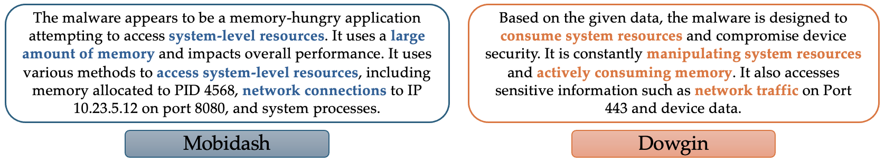
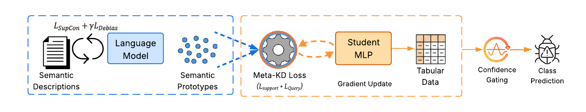
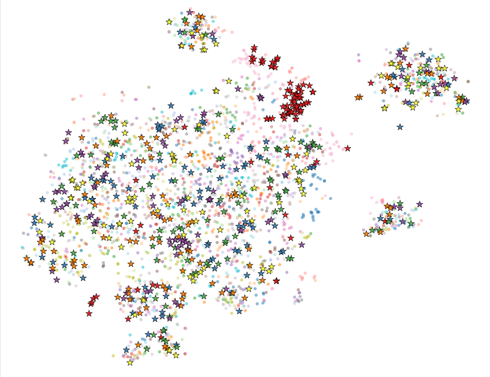
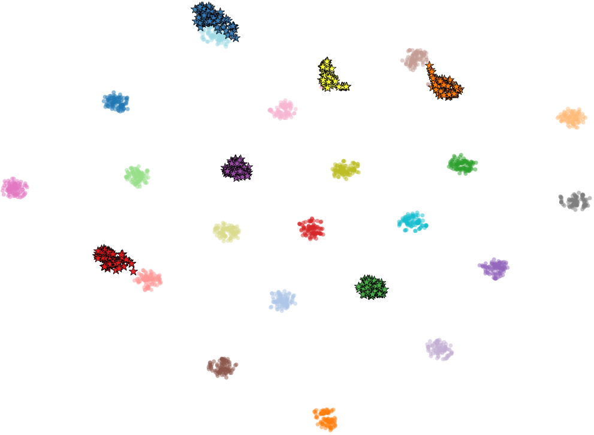
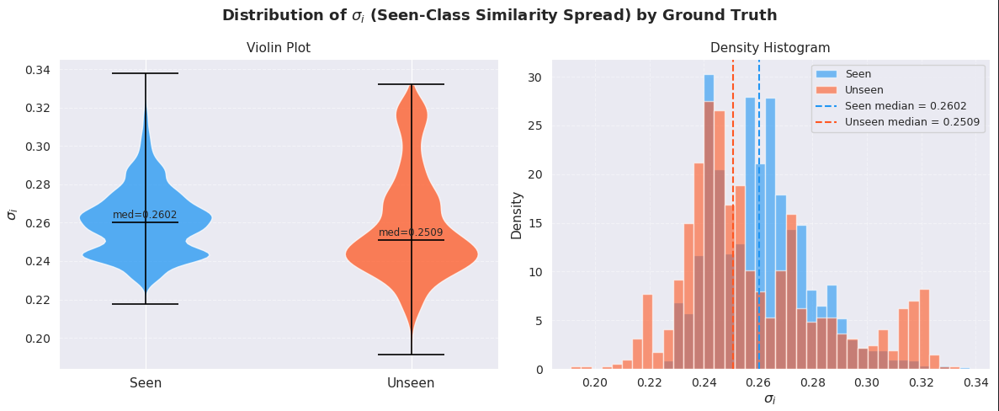
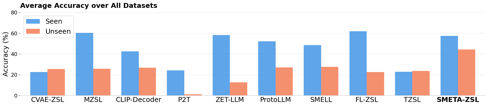

Ivan Alejandro Montoya Sanchez
The University of Texas at El Paso
Security and Intelligence Lab, The University of Texas at El Paso
Cybersecurity systems must adapt rapidly to emerging threats, yet labelled data for new threat categories is unavailable when those threats first appear. Generalized zero-shot learning lets a model recognise unseen classes through auxiliary semantic knowledge instead of labelled examples, and large language models can convert unstructured CTI reports into such knowledge. Applying this to cybersecurity is hard: threat descriptions overlap heavily, behavioural features and text are very different modalities, classes are severely imbalanced, and unseen threats are unknown during training. SMETA-ZSL learns semantic prototypes from overlapping descriptions through contrastive fine-tuning, aligns behavioural features through episodic meta-learning and knowledge distillation, and performs adaptive routing between seen and unseen classes. Across 7 benchmarks, it delivers the strongest overall generalized zero-shot performance under the strictest inductive setting, surpassing prior methods by 10.8 points on average.
New malware families emerge continually, and labelled samples for them arrive late. CTI reports describing new attacker behaviour are published early, but detectors consume behavioural features such as API calls, memory and network activity, not text. As a result, this intelligence goes largely unused by machine-learning defences.
Can language models turn unstructured threat reports into representations that update non-linguistic classifiers, even when no labelled examples of the new threat exist?

During training we observe labelled behavioural samples from a set of seen threat classes, each also described by CTI. At test time, samples may also come from unseen classes, which are described only by CTI reports supplied at inference. Every test sample must be assigned to its correct class among all seen and unseen classes. Performance is measured by the harmonic mean (H) of seen-class and unseen-class accuracy, which penalises methods that favour either side.

An off-the-shelf LLM places all CTI reports close together, because they share boilerplate vocabulary. We fine-tune LLaMA-3.1-8B with a supervised contrastive objective so reports of the same class pull together and different classes push apart, plus an isotropy penalty that discourages collapse toward the shared mean. Each class prototype is the mean embedding of its reports.


Behavioural features and CTI live in different spaces. A residual MLP (the student) learns to map features onto the prototypes. Training is episodic: every episode hides a random subset of seen classes as proxy-unseen queries, so the student constantly practises generalising to classes it is not being supervised on. Support classes receive soft targets from a teacher's similarity distribution plus the hard label; query classes receive only the label via prototype matching.
A new split each episode keeps the student from overfitting to seen classes.
Zero-shot models are biased toward seen classes. An input from a seen class matches one seen prototype sharply, while an input from an unseen class produces a flat similarity profile. The gate scores how far the best seen-class match stands out from the rest: a sharp peak routes the input to the seen classes, a flat profile routes it to the unseen classes, whose prototypes come from CTI. The gate adds no learned parameters; its threshold is tuned on validation data.

We evaluate on four cybersecurity benchmarks (CIC-AndMal-2020, BODMAS, APIGRAPH, AVASTCTU) and three general-domain tabular benchmarks (GOODREADS, PETFINDER, FAKEDDIT), averaging over five runs. SMETA-ZSL is held to the strictest open-set, inductive setting, while each baseline runs in its native, often more permissive, setting.
Table 1. Generalized zero-shot results, harmonic mean H (%). Best per dataset in bold.
| Cybersecurity | General domain | ||||||
|---|---|---|---|---|---|---|---|
| Method | CIC-AndMal | BODMAS | APIGRAPH | AVASTCTU | GOODREADS | PETFINDER | FAKEDDIT |
| CVAE-ZSL | 17.56 | 30.20 | 8.22 | 24.85 | 11.89 | 1.46 | 14.33 |
| MZSL | 39.70 | 42.23 | 23.21 | 22.27 | 22.50 | 30.96 | 38.16 |
| CLIP-decoder | 14.34 | 43.15 | 21.49 | 39.14 | 18.76 | 32.24 | 36.56 |
| P2T | 0.00 | 0.00 | 0.47 | 0.48 | 7.81 | 2.52 | 0.55 |
| ZET-LLM | 13.03 | 32.32 | 12.67 | 0.01 | 20.48 | 23.14 | 1.05 |
| ProtoLLM | 38.15 | 37.01 | 21.59 | 42.26 | 24.34 | 25.69 | 47.80 |
| SMELL | 28.35 | 27.60 | 12.32 | 36.71 | 24.21 | 3.15 | 21.10 |
| FL-ZSL | 29.43 | 48.12 | 27.16 | 44.46 | 21.89 | 31.41 | 21.20 |
| TZSL | 10.94 | 41.20 | 30.80 | 29.67 | 0.00 | 6.13 | 17.58 |
| SMETA-ZSL | 57.78 | 50.20 | 50.19 | 57.00 | 35.92 | 33.36 | 44.45 |

Table 2. Zero-shot SMETA-ZSL vs. one-shot methods, H (%). Baselines see one labelled sample per unseen class; SMETA-ZSL sees none.
| Method | CIC-AndMal | BODMAS | APIGRAPH | AVASTCTU | GOODREADS | PETFINDER | FAKEDDIT |
|---|---|---|---|---|---|---|---|
| TabPFN | 36.28 | 49.09 | 4.91 | 42.14 | 0.00 | 0.00 | 12.66 |
| APT | 51.92 | 49.44 | 11.54 | 65.52 | 20.57 | 14.82 | 10.59 |
| ZEUS | 47.29 | 58.72 | 43.12 | 79.87 | 20.97 | 23.00 | 40.84 |
| HistGradBoost | 37.21 | 59.83 | 38.93 | 61.70 | 0.02 | 0.57 | 1.04 |
| XGBoost | 24.57 | 27.85 | 1.67 | 9.26 | 0.00 | 0.00 | 0.00 |
| SMETA-ZSL (zero-shot) | 56.70 | 50.20 | 50.19 | 57.00 | 35.92 | 33.36 | 44.45 |
Table 3. Adding a few labels. Unseen accuracy U and H (%) with K labelled samples per unseen family.
| CIC-AndMal | BODMAS | AVASTCTU | ||||
|---|---|---|---|---|---|---|
| K | U | H | U | H | U | H |
| 0 (zero-shot) | 51.07 | 57.78 | 47.67 | 59.10 | 34.28 | 51.01 |
| 1 | 64.45 | 60.73 | 55.28 | 65.61 | 54.96 | 69.85 |
| 2 | 61.36 | 61.44 | 66.50 | 72.19 | 63.76 | 76.55 |
| 5 | 61.88 | 59.62 | 65.13 | 72.08 | 68.17 | 79.67 |
@article{montoyasanchez2026smetazsl,
title = {SMETA-ZSL: Semantic Meta-Alignment for Zero-Shot Threat Classification},
author = {Montoya Sanchez, Ivan Alejandro and Kotal, Anantaa and Piplai, Aritran},
journal = {arXiv preprint arXiv:2607.09936},
year = {2026}
}